특수용접기능사 (2011-10-09 기출문제)
1과목: 용접일반
1. 가스용접에서 가변압식 팁의 능력을 표시하는 것은?
- 표준불꽃으로 용접 시 매시간당 아세틸렌가스의 소비량을 리터로 표시한 것
- 표준불꽃으로 용접 시 매시간당 산소의 소비량을 리터로 표시한 것
- 산화불꽃으로 용접 시 매시간당 아세틸렌가스의 소비량을 리터로 표시한 것
- 산화불꽃으로 용접 시 매시간당 산소의 소비량을 리터로 표시한 것
(정답률: 75%)

2. 탄소 아크 절단에 압축공기를 병용한 방법으로 용융부에 전극홀더의 구멍에서 탄소전극봉에 나란히 분출하는 고속의 공기를 불어내어 홈을 파는 방법을 무엇이라 하는가?
- 탄소아크절단(carbon arc cetting)
- 아크 에어 가우징(arc air gouging)
- 금속아크절단(metal arc cutting)
- 분말절단(power cutting)
(정답률: 86%)
3. 가스용접에 비해 피복금속 아크 용접법의 장점이 아닌 것은?
- 직접 용접에 이용되는 열효율이 높다.
- 열의 집중성이 좋아 효율적인 용접을 할 수 있다.
- 용접변형이 크고 기계적 강도가 양호하다.
- 폭발의 위험성이 없다.
(정답률: 66%)
4. 용접봉 지름이 9㎜정도이고 용접전류가 400A이상인 탄소 아크 용접에 가장 적합한 차광유리의 차광도 번호는?
- 18
- 14
- 10
- 6
(정답률: 66%)
5. 아크 전류가 일정할 때 아크 전압이 높아지면 용접봉의 용융속도가 늦어지고, 아크전압이 낮아지면 용융속도는 빨라지는 특성은?
- 절연회복 특성
- 정전압 특성
- 정전류 특성
- 아크 길이 자기제어 특성
(정답률: 72%)
6. 용접이음을 리벳이음과 비교하였을 때 용접이음의 장점으로 틀린 것은?
- 자재가 절약되며 중량이 감소한다.
- 작업이 비교적 복잡하고 이음효율이 낮다.
- 기밀, 수밀성이 우수하다.
- 합리적 또는 창조적인 구조로 제작이 가능하다.
(정답률: 89%)
7. 가스 절단에 대한 설명으로 옳지 않는 것은?
- 주철은 포함된 흑연이 산화반응을 방해하므로 가스 절단이 잘된다.
- 하나의 드래그라인의 시작점에서 끝점까지의 거리를 드래그 길이라 한다.
- 표준 드래그의 길이는 보통 판 두께의 20%정도이다.
- 산소의 순도(99%이상)가 높으면 절단속도가 빠르다.
(정답률: 62%)
8. 가스절단에서 절단속도에 대한 설명으로 틀린 것은?
- 절단속도는 모재의 온도가 높을수록 고속절단이 가능하다.
- 절단속도는 절단산소의 압력이 낮고 산소 소비량이 적을수록 정비례하여 증가한다.
- 산소 절단할 때의 절단속도는 절단산소의 분출상태와 속도에 따라 좌우된다.
- 산소의 순도(99% 이상)가 높으면 절단속도가 빠르다.
(정답률: 73%)
9. 가스용접에서 충전가스의 용기도색으로 틀린 것은?
- 산소 - 녹색
- 프로판 - 회색
- 탄산가스 - 백색
- 아세틸렌 - 황색
(정답률: 75%)
10. 가스 용접에서 모재의 두께가 6㎜일 때 사용되는 용접봉의 직경을 계산식에 의해 구하면 얼마인가?
- 1㎜
- 4㎜
- 7㎜
- 9㎜
(정답률: 89%)
11. 피복 금속 아크 용접회로를 번호 순서에 맞게 잘 표현된 것은?
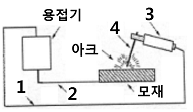
- 1:전극케이블, 2:접지케이블, 3:용접봉, 4:홀더
- 1:전극케이블, 2:접지케이블, 3:홀더, 4:용접봉
- 1:접지케이블, 2:전극케이블, 3:홀더, 4:용접봉
- 1:홀더, 2:전극케이블, 3:접지케이블, 4:용접봉
(정답률: 79%)
12. 가스불꽃의 구성에서 높은 열(3200~3500℃)을 발생하는 부분으로 약간의 환원성을 띠게 되는 불꽃은?
- 겉불꽃
- 불꽃심(백심)
- 속불꽃(내염)
- 겉불꽃 주변
(정답률: 56%)
13. 피복 금속 아크 용접봉의 내균열성이 좋은 정도는?
- 피복제의 염기성이 높을수록 양호하다.
- 피복제의 산성이 높을수록 양호하다.
- 피복제의 산성이 낮을수록 양호하다.
- 피복제의 염기성이 낮을수록 양호하다.
(정답률: 59%)
14. 가스용접 시 전진법과 후진법을 비교 설명한 것 중 틀린 것은?
- 전진법은 용접속도가 느리다.
- 후진법은 열 이용률이 좋다.
- 전진법은 개선 홈의 각도가 크다.
- 후진법은 용접변형이 크다.
(정답률: 76%)
15. 강괴, 강편, 슬랙, 기타 표면의 균열이나 주름, 주조, 결함, 탈탄층 등의 표면결함을 얇게 불꽃가공에 의해서 제거하는 가스 가공법은?
- 스카핑
- 가스 가우징
- 아크 에어 가우징
- 플라스마 제트 가공
(정답률: 66%)
16. 용접봉의 피복제 중에 산화티탄을 약 35%정도 포함한 용접봉으로서 일반 경구조물의 용접에 많이 사용되는 용접봉은?
- 저수소계
- 일루미나이트계
- 고산화티탄계
- 철분산화철계
(정답률: 72%)
17. 다음 중 직류 정극성의 특징이 아닌 것은?
- 모재의 용입이 깊다.
- 비드 폭이 좁다.
- 주로 박판에 사용된다.
- 용접봉의 용융이 느리다.
(정답률: 75%)
18. 18-8 스테인리스강의 결점은 600~800℃에서 단시간 내에 탄화물이 결정립계에 석출되기 때문에 입계부근의 내식성이 저하되어 점진적으로 부식되는 데 이것을 무엇이라 하는가?
- 결정 부식
- 입계 부식
- 탄화 부식
- 부근 부식
(정답률: 62%)
19. 가스질화법에서 직접 질화층을 형성하지는 않으나 질화효과를 크게 하는 원소는?
- Cu
- Al
- W
- Ni
(정답률: 35%)
20. 표준 고속도강(high speed steel)의 성분 조성은?
- W(18%) - Ni(4%) - Co(1%)
- W(18%) - Ni(6%) - Co(2%)
- W(18%) - Cr(4%) - V(1%)
- W(18%) - Ni(6%) - Co(5%)
(정답률: 50%)
21. 탄소공구강 및 일반 공구재료의 구비조건으로 틀린 것은?
- 상온 및 고온경도가 클 것
- 내마모성이 클 것
- 강인성 및 내충격성이 적을 것
- 가공 및 열처리성이 양호할 것
(정답률: 53%)
22. 강의 담금질 조직을 냉각속도에 따라 구분할 때 속하지 않는 것은?
- 시멘타이트
- 마텐자이트
- 트루스타이트
- 오스테나이트
(정답률: 32%)
23. 보통 주철은 650~950℃사이에서 가열과 냉각을 반복하면 부피가 크게 되어 변형이나 균열이 발생하고 강도와 수명이 단축된다. 이런 현상을 무엇이라 하는가?
- 주철의 성장
- 주철의 부식
- 주철의 취성
- 주철의 퇴보
(정답률: 57%)
24. 황동의 고온탈아연(dezincing)현상에 대한 설명 중 틀린 것은?
- 고온에서 증발에 의하여 황동표면으로부터 아연이 탈출되는 현상이다.
- 탈 아연을 방지하려면 표면에 산화물 피막을 형성시키면 효과가 있다.
- 아연산화물은 증발을 촉진시키는 효과가 있으며 알루미늄산화물은 더욱 비효과적이다.
- 고온일수록 표면에 산화물 등이 없어 깨끗할수록 탈아연이 심해진다.
(정답률: 48%)
25. 탄소강에서 탄소량의 증가에 따라 감소되는 것은?
- 열전도도
- 비열
- 전기저항
- 항자력
(정답률: 60%)
26. 아연과 그 합금에 대한 설명으로 틀린 것은?
- 조밀육방 격자형이며 청백색으로 연한 금속이다.
- 아연 합금에는 Zn-Al계, Zn-Al-Cu 계 및 Zn-Cu계 등이 있다.
- 주조성이 나쁘므로 다이캐스팅용에 사용되지 않는다.
- 주조한 상태의 아연은 인장강도나 연신율이 낮다.
(정답률: 59%)
27. 다음 중 림드강의 특징으로 옳지 않은 것은?
- 광괴 내부에 기포와 편석이 생긴다.
- 강의 재질이 균일하지 못하다.
- 중앙부의 응고가 지연되며 먼저 응고한 바깥부터 주상정이 테두리에 생긴다.
- 탈산제로 완전 탈산시킨 강이다.
(정답률: 60%)
28. 내식성 알루미늄 합금의 종류에 속하지 않는 것은?
- 알민(Almin)
- 하이드로날륨(Hydronalium)
- 코비탈륨(Cobitalium)
- 알드레이(Aldrey)
(정답률: 47%)
29. 다음 중 전자 빔 용접의 장점과 거리가 먼 것은?
- 고진공 속에서 용접을 하므로 대기와 반응되기 쉬운 활성 재료도 용이하게 용접된다.
- 두꺼운 판의 용접이 불가능하다.
- 용접을 정밀하고 정확하게 할 수 있다.
- 에너지 집중이 가능하기 때문에 고속으로 용접이 된다.
(정답률: 81%)
30. 맞대기 용접 이음에서 최대 인장하중이 8000kgf이고, 판두께가 9mm, 용접선의 길이가 15cm일 때 용착금속의 인장강도는 약 몇 kgf/mm2인가?
- 5.9
- 5.5
- 5.6
- 5.2
(정답률: 53%)
31. 용접작업 중 지켜야 할 안전사항으로 틀린 것은?
- 보호 장구를 반드시 착용하고 작업한다.
- 훼손된 케이블은 사용 후에 보수한다.
- 도장된 탱크 안에서의 용접은 충분히 환기시킨 후 작업한다.
- 전격 방지기가 설치된 용접기를 사용한다.
(정답률: 92%)
32. 아래 그림에서 탄소강을 아크 용접 한 매크로 조직 용접부 중 열영향부를 나타낸 곳은?
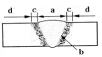
- a
- b
- c
- d
(정답률: 61%)
33. 용접 작업과 관련한 화재예방 대책으로 가장 적절하지 않은 것은?
- 용접작업 중에는 반드시 소화기를 비치한다.
- 용접 작업은 가연성 물질이 있는 안전한 장소를 선택한다.
- 인화성 액체가 들어있는 용기나 탱크는 내부를 완전히 세척 후 통풍구멍을 개방하고 작업한다.
- 가스용접 장치는 화기로부터 5m이상 떨어진 곳에 설치하여 작업한다.
(정답률: 84%)
34. 반자동 CO2가스 아크 편면(one side)용접 시 뒷댐 재료로 가장 많이 사용되는 것은?
- 세라믹 제품
- CO2가스
- 테프론 테이프
- 알루미늄 판재
(정답률: 72%)
35. 용접이음부에 예열(Preheating)하는 방법 중 가장 적절하지 않는 것은?
- 연강을 기온이 0℃이하에서 용접하면 저온균열이 발생하기 쉬우므로 이음의 양쪽을 약 100㎜폭이 되게 하여 약 50~70℃정도로 예열하는 것이 좋다.
- 다층용접을 할 때는 제2층 이후는 앞 층의 열로 모재가 예열한 것과 동등한 효과를 얻기 때문에 예열을 생략할 수도 있다.
- 일반적으로 주물, 내열합금 등은 용접균열이 발생하지 않으므로 예열할 필요가 없다.
- 후판, 구리 도는 구리합금, 알루미늄합금 등과 같이 열전도가 큰 것은 이음부의 열집중이 부족하여 융합불량이 생기기 쉬우므로 200~400℃정도의 예열이 필요하다.
(정답률: 66%)
2과목: 용접재료
36. 용접결함의 종류 중 치수상의 결함에 속하는 것은?(오류 신고가 접수된 문제입니다. 반드시 정답과 해설을 확인하시기 바랍니다.)
- 변형
- 융합불량
- 슬래그 섞임
- 기공
(정답률: 80%)
37. 다음 그림은 필릿 용접이음 홈의 각부 명칭을 나타낸 것이다. 필릿 용접의 목두께에 해당하는 부분은?
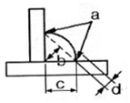
- a
- b
- c
- d
(정답률: 63%)
38. 이산화탄소 가스 아크 용접에서 용착속도에 따른 내용 중 틀린 것은?
- 와이어 용융속도는 아크전류에 거의 정비례하며 증가한다.
- 용접속도가 빠르면 모재의 입열이 감소한다.
- 용착률은 일반적으로 모재의 입열이 감소한다.
- 와이어 용융속도는 와이어의 지름과는 거의 관계가 없다.
(정답률: 38%)
39. 본 용접의 용착법 중 각 층마다 전체 길이를 용접하면서 쌓아올리는 방법으로 용접하는 것은?
- 전진 블록법
- 케스케이드법
- 빌드업법
- 스킵법
(정답률: 65%)
40. 이산화탄소 아크 용접의 특징 설명으로 틀린 것은?
- 용제를 사용하지 않아 슬래그의 혼입이 없다.
- 용접 금속의 기계적, 야금적 성질이 우수하다.
- 전류밀도가 높아 용입이 깊고 용융속도가 빠르다.
- 바람의 영향을 전혀 받지 않는다.
(정답률: 82%)
41. 서브머지드 아크 용접의 특징이 아닌 것은?
- 콘택트 팁에서 통전되므로 와이어 중에 저항열이 적게 발생되어 고전류 사용이 가능하다.
- 아크가 보이지 않으므로 용접부의 적부를 확인하기가 곤란하다.
- 용접길이가 짧을 때 능률적이며 수평 및 위보기 자세용접에 주로 이용된다.
- 일반적으로 비드 외관이 아름답다.
(정답률: 71%)
42. 납땜의 용제가 갖추어야 할 조건을 잘못 표현한 것은?
- 청정한 금속면의 산화를 촉진시킬 것
- 모재나 땜납에 대한 부식작용이 최소한 일 것
- 용제의 유효온도 범위와 납땜 온도가 일치할 것
- 땜납의 표면장력을 맞추어서 모재와의 친화도를 높일 것
(정답률: 71%)
43. 아세틸렌(acetylene)이 연소하는 과정에 포함되지 않는 원소는?
- 유황(S)
- 수소(H)
- 탄소(C)
- 산소(O)
(정답률: 77%)
44. 불활성 가스 금속 아크 용접에서 용적이행 형태의 종류에 속하지 않는 것은?
- 단락 이행
- 입상 이행
- 슬래그 이행
- 스프레이 이행
(정답률: 54%)
45. 피복 아크 용접에서 슬래그 혼입으로 용접결함이 발생하였다. 방지대책으로 틀린 것은?
- 전류를 약간 높게 한다.
- 루트 간격 및 치수를 적게 한다.
- 용접부 예열을 한다.
- 슬래그를 깨끗이 제거한다.
(정답률: 46%)
46. 알루미늄 분말과 산화철 분말을 중량비로 혼합, 과산화바륨과 알루미늄 등 혼합분말을 점화제로 점화하면 일어나는 화학반응은?
- 테르밋반응
- 용융반응
- 포정반응
- 공석반응
(정답률: 72%)
47. 시험편을 인장 파단하여 항복점(또는 내력), 인장강도, 연신율, 단면 수축율 등을 조사하는 시험법은?
- 경도시험
- 굽힘시험
- 충격시험
- 인장시험
(정답률: 64%)
48. 플래시 버트 용접 과정의 3단계는?
- 예열, 플래시, 업셋
- 업셋, 플래시, 후열
- 예열, 검사, 플래시
- 업셋, 예열, 후열
(정답률: 77%)
49. 좁은 탱크 안에서 작업할 때 주의사항 중 옳지 않은 것은?
- 질소를 공급하여 환기시킨다.
- 환기 및 배기 장치를 한다.
- 가스 마스크를 착용한다.
- 공기를 불어넣어 환기시킨다.
(정답률: 81%)
50. 불활성 가스 금속 아크(MIG)용접에서 사용되는 와이어로 적절한 지름은?
- ∅1.0 ~ 2.4[㎜]
- ∅5.0 ~ 7.0[㎜]
- ∅3.0 ~ 5.0[㎜]
- ∅4.0 ~ 6.4[㎜]
(정답률: 57%)
3과목: 기계제도
51. 다음은 제3각법의 정투상도로 나타낸 정면도와 우측면도이다. 평면도로 가장 적합한 것은?
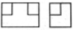
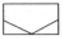
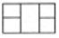
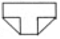
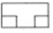
(정답률: 84%)
52. 그림과 같은 용접기호의 뜻은?
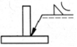
- 볼록형 필릿 용접
- 오목형 필릿 용접
- 볼록형 심 용접
- 오목형 심 용접
(정답률: 73%)
53. 그림에서 □15에 대한 설명으로 맞는 것은?
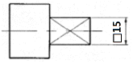
- 어느 한 쪽 길이가 15인 직사각형
- 한 변의 길이가 15인 정사각형
- φ15인 원통에 평면이 있음.
- 참고 치수가 15인 평면
(정답률: 75%)
54. 다음 도면에서 치수 28에 붙은 “( )”가 의미하는 것은?
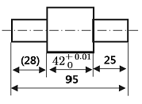
- 참고 치수
- 허용 치수
- 기준 치수
- 치수 공차
(정답률: 80%)
55. 그림과 같은 입체도에서 화살표 방향을 정면으로 한 제3각 정투상도로 가장 적합한 투상은?
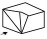
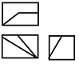
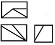
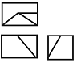
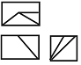
(정답률: 72%)
56. 리벳의 호칭이 다음과 같이 표시된 경우 16의 의미는?
- 리벳의 수량
- 리벳의 호칭지름
- 리벳이음의 구멍치수
- 리벳의 길이
(정답률: 53%)
57. 그림과 같은 도면이 나타내는 단면은 어느 단면도에 해당하는가?
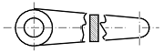
- 한쪽 단면도
- 회전 도시 단면도
- 예각 단면도
- 온 단면도
(정답률: 76%)
58. 기계제도에서의 척도에 대한 설명으로 잘못된 것은?
- 척도란 도면에서의 길이와 대상물의 실제길이의 비이다.
- 척도는 표제란에 기입하는 것이 원칙이다.
- 축척은 2:1, 5:1, 10:1 등과 같이 나타낸다.
- 도면을 정해진 척도값으로 그리지 못하거나 비례하지 않을 때에는 척도를 “NS"로 표시할 수 있다.
(정답률: 62%)
59. 다음 중 게이트 밸브의 표시법으로 올바른 것은?
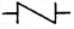
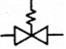
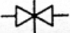
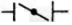
(정답률: 58%)
60. 대상물의 보이는 부분의 모양을 표시하는 데 사용하는 선은?
- 치수선
- 외형선
- 숨은선
- 기준선
(정답률: 85%)